עולם המדע האינטראקטיבי
אוסף של לומדות מדע חיות - סימולציות, חדרי בריחה, מצגות אינטראקטיביות ומשחקים - שמזמינים תלמידות ותלמידים לחקור, לשחק וללמוד מדע אחרת. כל לומדה היא תחנה בפני עצמה. בחרו תחנה והתחילו לחקור.
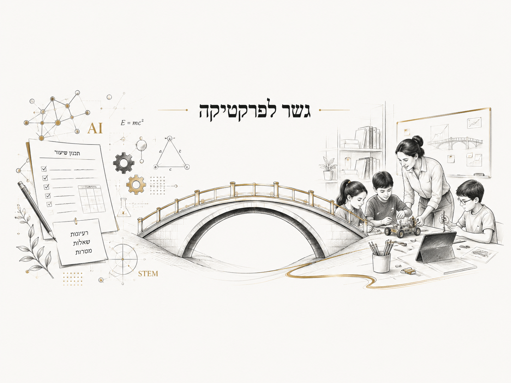
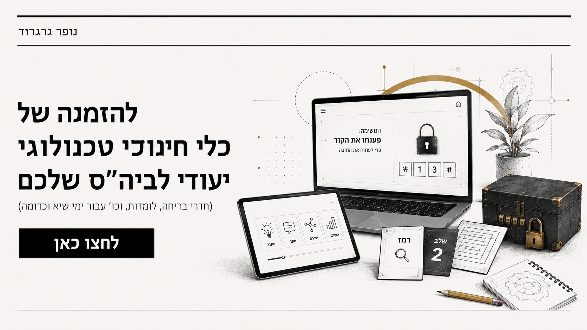
בחרו לומדה
12 תחנות · לחיצה פותחת בלשונית חדשה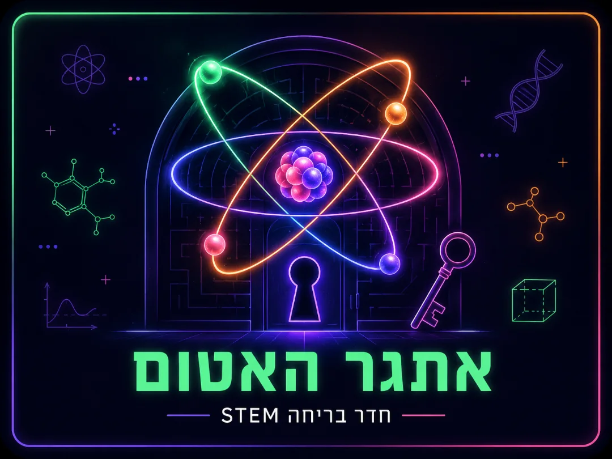
אתגר האטום
עזרו לד"ר מיא-לין לאזן את מחולל הפרוטונים שיצא מכלל שליטה! חדר בריחה STEM מלא חידות מדע.
←כניסה ללומדה01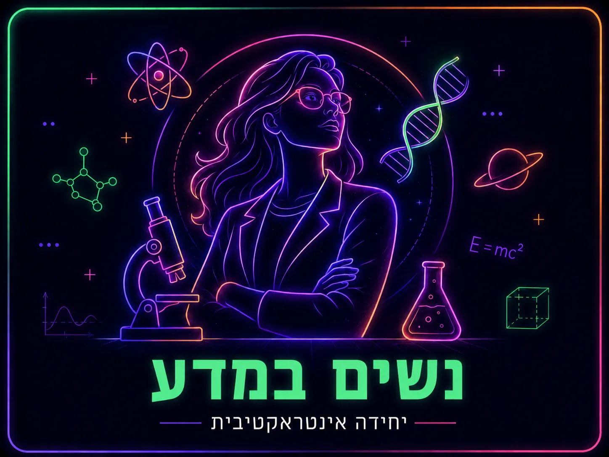
נשים במדע
מסע מצולם בעקבות נשים פורצות דרך ששינו את פני המדע ואת ההיסטוריה.
←כניסה ללומדה02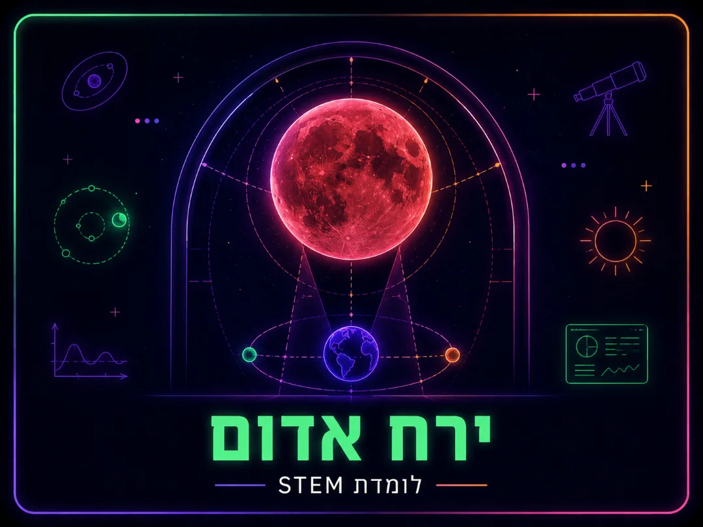
ירח אדום
לומדה שחוקרת את תופעת "ירח דם" - ליקוי ירח מיוחד שבו הירח נצבע באדום.
←כניסה ללומדה03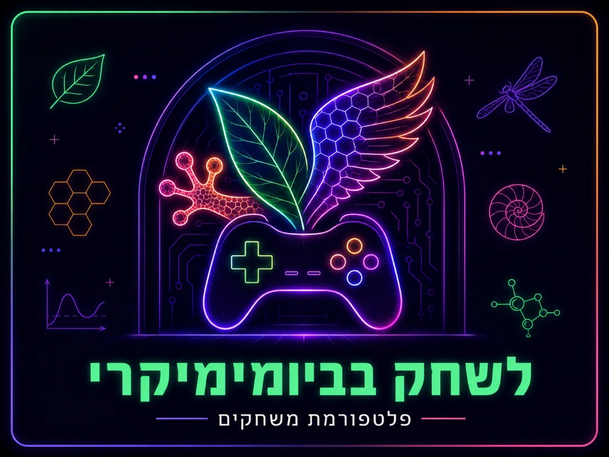
לשחק בביומימיקרי
פלטפורמת משחקים שמלמדת איך הטבע מעורר השראה להמצאות ולפתרונות חכמים.
←כניסה ללומדה04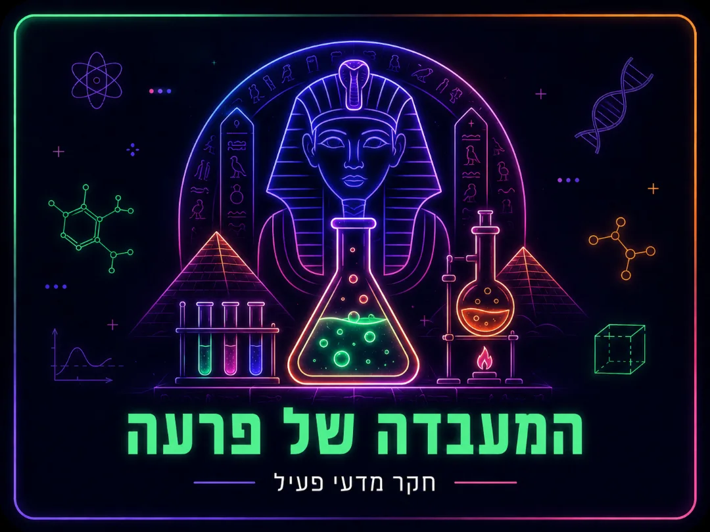
המעבדה של פרעה
חקר מדעי פעיל המלווה בניתוח ממצאים ובדיון עליהם באמצעות היועצים המלכותיים.
←כניסה ללומדה05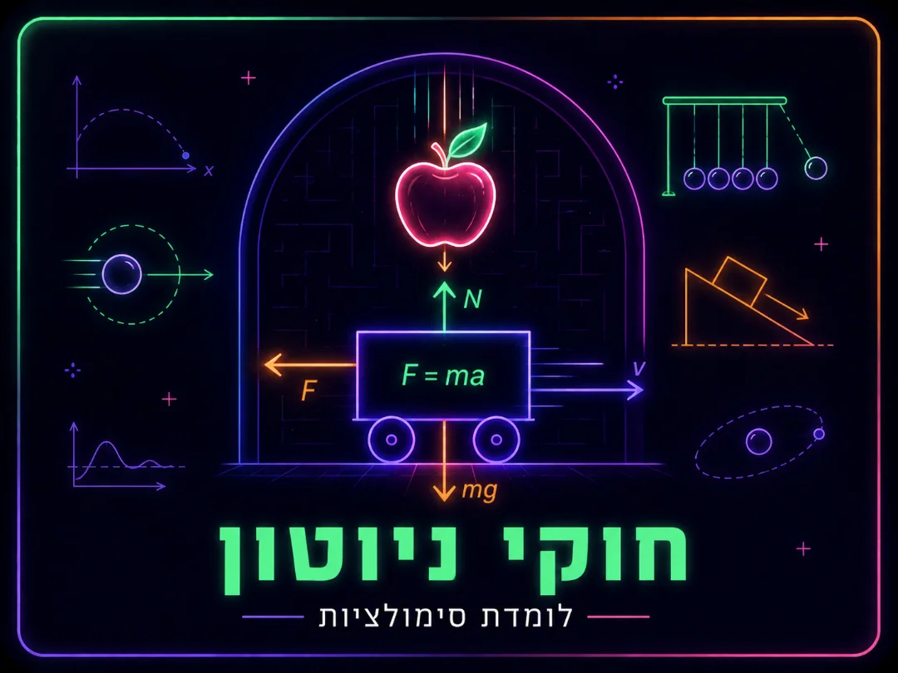
חוקי ניוטון
לומדת סימולציות שמאפשרת להרגיש את הכוחות, התנועה והתאוצה, ולא רק לקרוא עליהם.
←כניסה ללומדה06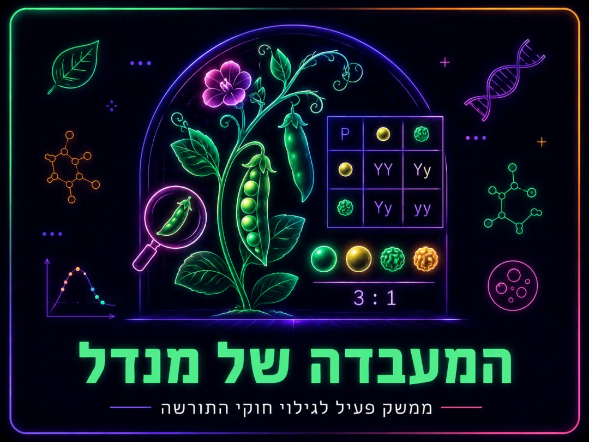
המעבדה של מנדל
ממשק פעיל לגילוי חוקי התורשה דרך הכלאות אינטראקטיביות וניבוי תכונות.
←כניסה ללומדה07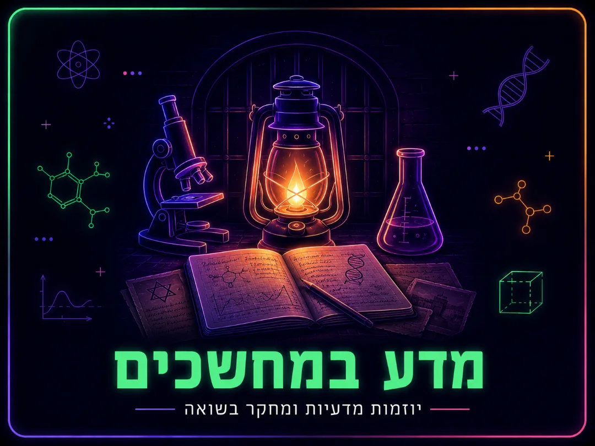
מדע במחשכים
יוזמות מדעיות ומחקר בתקופת השואה. סיפור מרגש על ידע, תושייה ותקווה.
←כניסה ללומדה08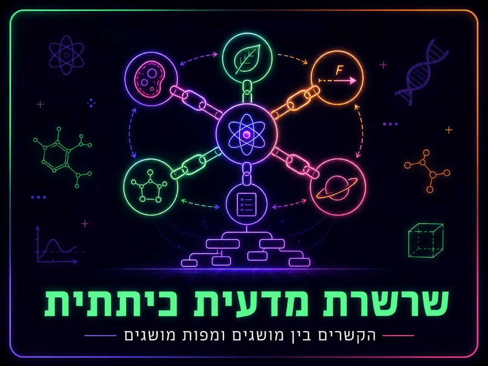
שרשרת מדעית כיתתית
בונים יחד מפות מושגים וקשרים בין רעיונות מדעיים. חשיבה משותפת לכל הכיתה.
←כניסה ללומדה09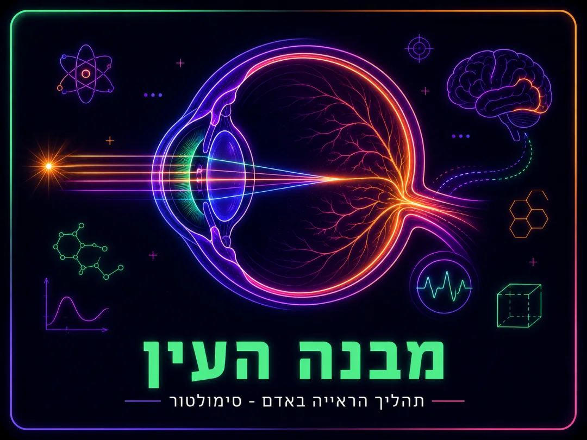
מבנה העין ותהליך הראייה
סימולטור שמראה איך אור נכנס לעין, נשבר והופך לתמונה במוח, שלב אחר שלב.
←כניסה ללומדה10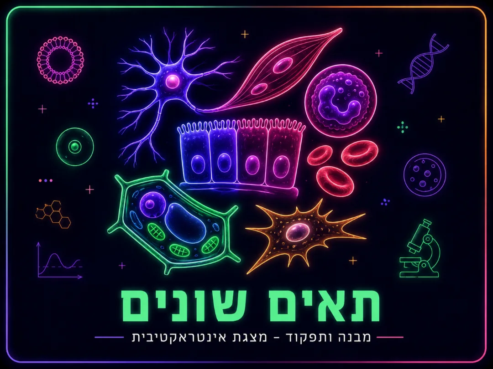
תאים שונים - מבנה ותפקוד
מצגת אינטראקטיבית על מבנה התא, האברונים השונים והתפקיד של כל אחד מהם.
←כניסה ללומדה11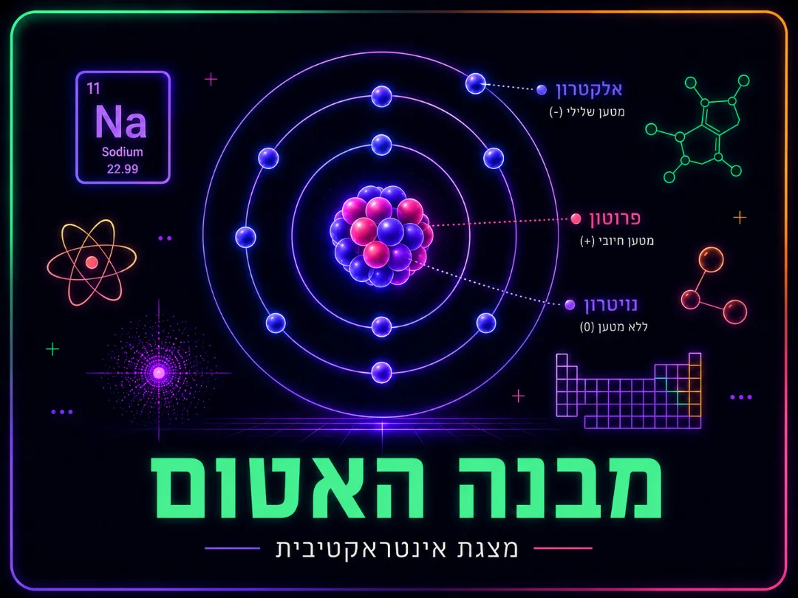
מבנה האטום
מצגת אינטראקטיבית שצוללת אל לב החומר: פרוטונים, נייטרונים ואלקטרונים.
←כניסה ללומדה12